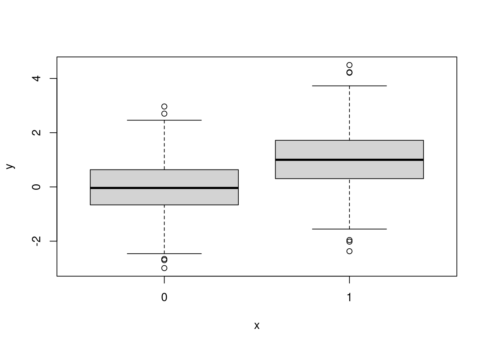
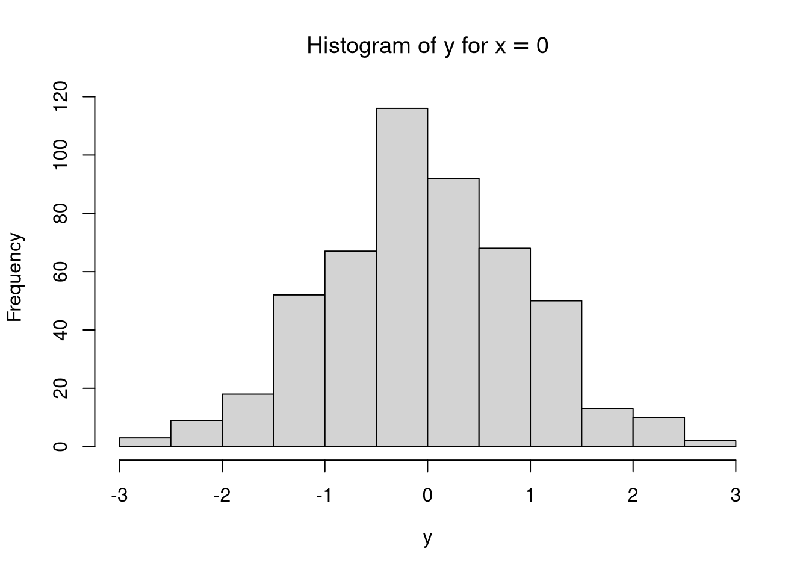
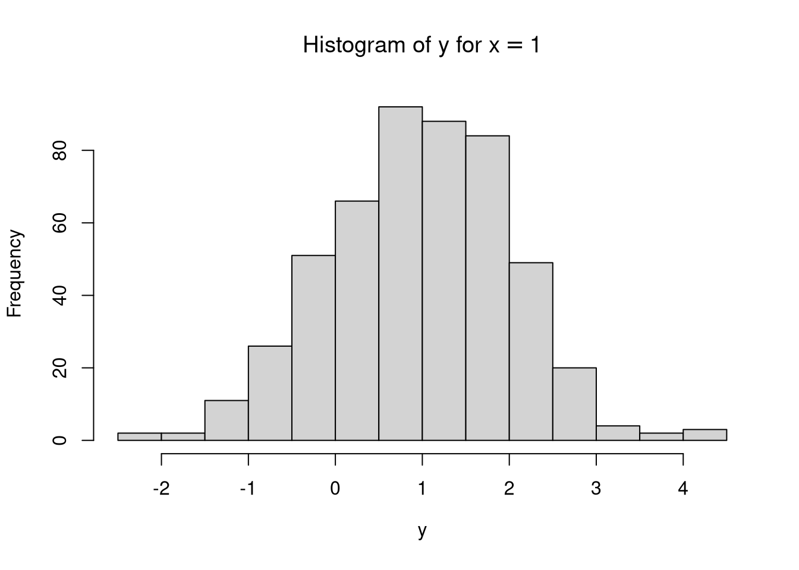

Chapter 4 Student’s \(t\)-test
In this section, the Student’s \(t\)-test is presented as a structural equation model using the RAM notation. Let \(y\) be a continuous dependent variable, \(x\) be a dichotomous independent variable \(\left( x = \{0, 1\} \right)\), and \(\varepsilon\) be the stochastic error term with mean 0 and constant variance of \(\sigma_{\varepsilon}^{2}\) across the values of \(x\). The associations of the variables are given by
\[\begin{equation*} y = \alpha + \beta x + \varepsilon \end{equation*}\]
where
- \(\alpha\) is the expected value of \(y\) when \(x = 0\)
- \(\beta\) is the unit change in \(y\) for unit change in \(x\)
- \(\alpha + \beta\) is the expected value of \(y\) when \(x = 1\)
Figure 4.1: Student’s \(t\)-test
4.1 Symbolic
Let \(\left\{ y, x, \varepsilon \right\}\) be the variables of interest.
\[\begin{align*}\mathbf{A} &=\left( \begin{array}{ccc} 0 & \beta & 1 \\ 0 & 0 & 0 \\ 0 & 0 & 0 \end{array} \right)\end{align*}\]
\[\begin{align*}\mathbf{S} &=\left( \begin{array}{ccc} 0 & 0 & 0 \\ 0 & \sigma _{x} ^{2} & 0 \\ 0 & 0 & \sigma _{\varepsilon } ^{2} \end{array} \right)\end{align*}\]
\[\begin{align*}\mathbf{C} &=\left( \mathbf{I} - \mathbf{A} \right)^{-1} \mathbf{S} \left[ \left( \mathbf{I} - \mathbf{A} \right)^{-1} \right]^{\mathsf{T}} \\\\ &=\mathbf{E} \mathbf{S} \mathbf{E}^{\mathsf{T}} \\\\ &=\left( \begin{array}{ccc} 1 & \beta & 1 \\ 0 & 1 & 0 \\ 0 & 0 & 1 \end{array} \right)\left( \begin{array}{ccc} 0 & 0 & 0 \\ 0 & \sigma _{x} ^{2} & 0 \\ 0 & 0 & \sigma _{\varepsilon } ^{2} \end{array} \right)\left( \begin{array}{ccc} 1 & \beta & 1 \\ 0 & 1 & 0 \\ 0 & 0 & 1 \end{array} \right)^{\mathsf{T}}\\ &=\left( \begin{array}{ccc} \sigma _{x} ^{2} \beta ^{2} + \sigma _{\varepsilon } ^{2} & \beta \sigma _{x} ^{2} & \sigma _{\varepsilon } ^{2} \\ \sigma _{x} ^{2} \beta & \sigma _{x} ^{2} & 0 \\ \sigma _{\varepsilon } ^{2} & 0 & \sigma _{\varepsilon } ^{2} \end{array} \right)\end{align*}\]
\[\begin{align*}\mathbf{F} &=\left( \begin{array}{ccc} 1 & 0 & 0 \\ 0 & 1 & 0 \end{array} \right)\end{align*}\]
\[\begin{align*}\mathbf{M} &=\mathbf{F} \left( \mathbf{I} - \mathbf{A} \right)^{-1} \mathbf{S} \left[ \left( \mathbf{I} - \mathbf{A} \right)^{-1} \right]^{\mathsf{T}} \mathbf{F}^{\mathsf{T}}\\ &=\mathbf{F} \mathbf{E} \mathbf{S} \mathbf{E}^{\mathsf{T}} \mathbf{F}^{\mathsf{T}} \\\\ &=\mathbf{F} \mathbf{C} \mathbf{F}^{\mathsf{T}} \\\\ &=\left( \begin{array}{ccc} 1 & 0 & 0 \\ 0 & 1 & 0 \end{array} \right)\left( \begin{array}{ccc} \sigma _{x} ^{2} \beta ^{2} + \sigma _{\varepsilon } ^{2} & \beta \sigma _{x} ^{2} & \sigma _{\varepsilon } ^{2} \\ \sigma _{x} ^{2} \beta & \sigma _{x} ^{2} & 0 \\ \sigma _{\varepsilon } ^{2} & 0 & \sigma _{\varepsilon } ^{2} \end{array} \right)\left( \begin{array}{ccc} 1 & 0 & 0 \\ 0 & 1 & 0 \end{array} \right)^{\mathsf{T}} \\\\ &=\left( \begin{array}{cc} \sigma _{x} ^{2} \beta ^{2} + \sigma _{\varepsilon } ^{2} & \beta \sigma _{x} ^{2} \\ \sigma _{x} ^{2} \beta & \sigma _{x} ^{2} \end{array} \right)\end{align*}\]
\[\begin{align*}\mathbf{v} &=\left( \mathbf{I} - \mathbf{A} \right)^{-1} \mathbf{u}\\ &=\left[\left( \begin{array}{ccc} 1 & 0 & 0 \\ 0 & 1 & 0 \\ 0 & 0 & 1 \end{array} \right)-\left( \begin{array}{ccc} 0 & \beta & 1 \\ 0 & 0 & 0 \\ 0 & 0 & 0 \end{array} \right)\right]^{\mathsf{-1}}\left( \begin{array}{c} \alpha \\ \mu _{x} \\ 0 \end{array} \right)\\ &=\left( \begin{array}{c} \alpha + \beta \mu _{x} \\ \mu _{x} \\ 0 \end{array} \right)\end{align*}\]
\[\begin{align*}\mathbf{u} &=\left( \mathbf{I} - \mathbf{A} \right) \mathbf{v}\\ &=\left[\left( \begin{array}{ccc} 1 & 0 & 0 \\ 0 & 1 & 0 \\ 0 & 0 & 1 \end{array} \right)-\left( \begin{array}{ccc} 0 & \beta & 1 \\ 0 & 0 & 0 \\ 0 & 0 & 0 \end{array} \right)\right]\left( \begin{array}{c} \alpha + \beta \mu _{x} \\ \mu _{x} \\ 0 \end{array} \right)\\ &=\left( \begin{array}{c} \alpha \\ \mu _{x} \\ 0 \end{array} \right)\end{align*}\]
\[\begin{align*}\mathbf{g} &=\mathbf{F} \left( \mathbf{I} - \mathbf{A} \right)^{-1} \mathbf{u}\\ &=\left[\left( \begin{array}{ccc} 1 & 0 & 0 \\ 0 & 1 & 0 \\ 0 & 0 & 1 \end{array} \right)-\left( \begin{array}{ccc} 0 & \beta & 1 \\ 0 & 0 & 0 \\ 0 & 0 & 0 \end{array} \right)\right]^{-1}\left( \begin{array}{c} \alpha \\ \mu _{x} \\ 0 \end{array} \right)\\ &=\left( \begin{array}{c} \alpha + \beta \mu _{x} \\ \mu _{x} \end{array} \right)\end{align*}\]
4.1.1 Using the ramR Package
A## y x e
## y "0" "beta" "1"
## x "0" "0" "0"
## e "0" "0" "0"S## y x e
## y "0" "0" "0"
## x "0" "sigma[x]^2" "0"
## e "0" "0" "sigma[varepsilon]^2"u## u
## y "alpha"
## x "mu[x]"
## e "0"filter## y x e
## y 1 0 0
## x 0 1 0The covariance expectations
can be symbolically derived using the ramR::C_sym() function.
ramR::C_sym(A, S)## {{sigma[x]^2*beta^2+sigma[varepsilon]^2, beta*sigma[x]^2, sigma[varepsilon]^2},
## { sigma[x]^2*beta, sigma[x]^2, 0},
## { sigma[varepsilon]^2, 0, sigma[varepsilon]^2}}\[\begin{equation*}\mathbf{C} =\left( \begin{array}{ccc} \sigma _{x} ^{2} \beta ^{2} + \sigma _{\varepsilon } ^{2} & \beta \sigma _{x} ^{2} & \sigma _{\varepsilon } ^{2} \\ \sigma _{x} ^{2} \beta & \sigma _{x} ^{2} & 0 \\ \sigma _{\varepsilon } ^{2} & 0 & \sigma _{\varepsilon } ^{2} \end{array} \right)\end{equation*}\]
The covariance expectations for the observed variables
can be symbolically derived using the ramR::M_sym() function.
ramR::M_sym(A, S, filter)## {{sigma[x]^2*beta^2+sigma[varepsilon]^2, beta*sigma[x]^2},
## { sigma[x]^2*beta, sigma[x]^2}}\[\begin{equation*}\mathbf{M} =\left( \begin{array}{cc} \sigma _{x} ^{2} \beta ^{2} + \sigma _{\varepsilon } ^{2} & \beta \sigma _{x} ^{2} \\ \sigma _{x} ^{2} \beta & \sigma _{x} ^{2} \end{array} \right)\end{equation*}\]
The mean expectations
can be symbolically derived using the ramR::v_sym() function.
ramR::v_sym(A, u)## {{alpha+beta*mu[x]},
## { mu[x]},
## { 0}}\[\begin{equation*}\mathbf{v} =\left( \begin{array}{c} \alpha + \beta \mu _{x} \\ \mu _{x} \\ 0 \end{array} \right)\end{equation*}\]
The mean expectations for the observed variables
can be symbolically derived using the ramR::g_sym() function.
ramR::g_sym(A, u, filter)## {{alpha+beta*mu[x]},
## { mu[x]}}\[\begin{equation*}\mathbf{g} =\left( \begin{array}{c} \alpha + \beta \mu _{x} \\ \mu _{x} \end{array} \right)\end{equation*}\]
4.2 Numerical Example
Let df be a random sample with the following parameters
| Parameter | \(x = 0\) | \(x = 1\) |
|---|---|---|
| Sample Size | 500 | 500 |
| \(\mu\) | 0 | 1 |
| \(\sigma^2\) | 1 | 1 |
| Parameter | Description | Estimate |
|---|---|---|
| \(\alpha\) | Mean of \(x = 0\). | 0 |
| \(\beta\) | Mean of \(x = 1\) minus \(x = 0\). | 1 |
head(df)## y x
## 1 1.3709584 0
## 2 -0.5646982 0
## 3 0.3631284 0
## 4 0.6328626 0
## 5 0.4042683 0
## 6 -0.1061245 0summary(df)## y x
## Min. :-2.9931 Min. :0.0
## 1st Qu.:-0.2770 1st Qu.:0.0
## Median : 0.4503 Median :0.5
## Mean : 0.4742 Mean :0.5
## 3rd Qu.: 1.2492 3rd Qu.:1.0
## Max. : 4.4953 Max. :1.0
4.2.1 \(t\)-test
t.test(y ~ x, data = df)##
## Welch Two Sample t-test
##
## data: y by x
## t = -15.897, df = 994.36, p-value < 2.2e-16
## alternative hypothesis: true difference in means is not equal to 0
## 95 percent confidence interval:
## -1.1329278 -0.8839594
## sample estimates:
## mean in group 0 mean in group 1
## -0.03004622 0.978397374.2.2 Linear Regression
summary(lm(y ~ x, data = df))##
## Call:
## lm(formula = y ~ x, data = df)
##
## Residuals:
## Min 1Q Median 3Q Max
## -3.3501 -0.6517 0.0086 0.6858 3.5169
##
## Coefficients:
## Estimate Std. Error t value Pr(>|t|)
## (Intercept) -0.03005 0.04486 -0.67 0.503
## x 1.00844 0.06344 15.90 <2e-16 ***
## ---
## Signif. codes: 0 '***' 0.001 '**' 0.01 '*' 0.05 '.' 0.1 ' ' 1
##
## Residual standard error: 1.003 on 998 degrees of freedom
## Multiple R-squared: 0.2021, Adjusted R-squared: 0.2013
## F-statistic: 252.7 on 1 and 998 DF, p-value: < 2.2e-164.2.3 Structural Equation Modeling
4.2.3.1 lavaan (Rosseel 2012)
model <- "
y ~ x
"
fit <- lavaan::sem(
model,
data = df,
meanstructure = TRUE,
fixed.x = FALSE
)
lavaan::summary(fit)## lavaan 0.6-7 ended normally after 12 iterations
##
## Estimator ML
## Optimization method NLMINB
## Number of free parameters 5
##
## Number of observations 1000
##
## Model Test User Model:
##
## Test statistic 0.000
## Degrees of freedom 0
##
## Parameter Estimates:
##
## Standard errors Standard
## Information Expected
## Information saturated (h1) model Structured
##
## Regressions:
## Estimate Std.Err z-value P(>|z|)
## y ~
## x 1.008 0.063 15.913 0.000
##
## Intercepts:
## Estimate Std.Err z-value P(>|z|)
## .y -0.030 0.045 -0.671 0.503
## x 0.500 0.016 31.623 0.000
##
## Variances:
## Estimate Std.Err z-value P(>|z|)
## .y 1.004 0.045 22.361 0.000
## x 0.250 0.011 22.361 0.0004.2.3.2 OpenMx (Boker et al. 2020)
RAM matrices can be used to specify models in OpenMx.
Note, however, that the u vector in the RAM notation is
M in the OpenMx notation.
mxData <- OpenMx::mxData(
observed = df,
type = "raw"
)
mxA <- OpenMx::mxMatrix(
type = "Full",
nrow = 3,
ncol = 3,
free = c(
F, T, F,
F, F, F,
F, F, F
),
values = c(
0, 0.20, 1,
0, 0, 0,
0, 0, 0
),
labels = c(
NA, "beta", NA,
NA, NA, NA,
NA, NA, NA
),
byrow = TRUE,
name = "mxA"
)
mxS <- OpenMx::mxMatrix(
type = "Symm",
nrow = 3,
ncol = 3,
free = c(
F, F, F,
F, T, F,
F, F, T
),
values = c(
0, 0, 0,
0, 0.20, 0,
0, 0, 0.20
),
labels = c(
NA, NA, NA,
NA, "sigma2x", NA,
NA, NA, "sigma2e"
),
byrow = TRUE,
name = "mxS"
)
mxM <- OpenMx::mxMatrix(
type = "Full",
nrow = 1,
ncol = 3,
free = c(
T, T, F
),
values = c(
0.20,
0.20,
0
),
labels = c(
"alpha",
"mux",
NA
),
byrow = TRUE,
name = "mxM"
)
mxF <- OpenMx::mxMatrix(
type = "Full",
nrow = 2,
ncol = 3,
free = FALSE,
values = c(
1, 0, 0,
0, 1, 0
),
byrow = TRUE,
name = "mxF"
)
expRAM <- OpenMx::mxExpectationRAM(
A = "mxA",
S = "mxS",
F = "mxF",
M = "mxM",
dimnames = c(
"y",
"x",
"e"
)
)
objML <- OpenMx::mxFitFunctionML()
mxMod <- OpenMx::mxModel(
name = "Model",
data = mxData,
matrices = list(
mxA,
mxS,
mxF,
mxM
),
expectation = expRAM,
fitfunction = objML
)
fit <- OpenMx::mxRun(mxMod)## Running Model with 5 parameterssummary(fit)## Summary of Model
##
## free parameters:
## name matrix row col Estimate Std.Error A
## 1 beta mxA 1 2 1.00844356 0.06337369
## 2 sigma2x mxS 2 2 0.25000000 0.01118034
## 3 sigma2e mxS 3 3 1.00402596 0.04490152
## 4 alpha mxM 1 y -0.03004621 0.04481202
## 5 mux mxM 1 x 0.49999999 0.01581140
##
## Model Statistics:
## | Parameters | Degrees of Freedom | Fit (-2lnL units)
## Model: 5 1995 4293.478
## Saturated: 5 1995 NA
## Independence: 4 1996 NA
## Number of observations/statistics: 1000/2000
##
## Information Criteria:
## | df Penalty | Parameters Penalty | Sample-Size Adjusted
## AIC: 303.4776 4303.478 4303.538
## BIC: -9487.4941 4328.016 4312.136
## CFI: NA
## TLI: 1 (also known as NNFI)
## RMSEA: 0 [95% CI (NA, NA)]
## Prob(RMSEA <= 0.05): NA
## To get additional fit indices, see help(mxRefModels)
## timestamp: 2021-01-23 18:35:48
## Wall clock time: 0.03835988 secs
## optimizer: SLSQP
## OpenMx version number: 2.18.1
## Need help? See help(mxSummary)4.2.4 Using the ramR Package
A## y x e
## y 0 1.008444 1
## x 0 0.000000 0
## e 0 0.000000 0S## y x e
## y 0 0.0000000 0.000000
## x 0 0.2502503 0.000000
## e 0 0.0000000 1.006038u## u
## y -0.03004622
## x 0.50000000
## e 0.00000000filter## y x e
## y 1 0 0
## x 0 1 0The covariance expectations
can be numerically derived using the ramR::C_num() function.
ramR::C_num(A, S)## y x e
## y 1.2605321 0.2523633 1.006038
## x 0.2523633 0.2502503 0.000000
## e 1.0060380 0.0000000 1.006038The covariance expectations for the observed variables
can be numerically derived using the ramR::M_num() function.
ramR::M_num(A, S, filter)## y x
## y 1.2605321 0.2523633
## x 0.2523633 0.2502503The mean expectations
can be numerically derived using the ramR::v_num() function.
ramR::v_num(A, u)## v
## y 0.4741756
## x 0.5000000
## e 0.0000000The mean expectations for the observed variables
can be numerically derived using the ramR::v_num() function.
ramR::g_num(A, u, filter)## g
## y 0.4741756
## x 0.50000004.3 Equations to RAM
The ramR package has a utility function
to convert structural equations to RAM notation.
The Student’s \(t\)-test can be expressed in the following equations
eq <- "
# VARIABLE1 OPERATION VARIABLE2 LABEL
e by y 1
y on x beta
e with e sigma[varepsilon]^2
x with x sigma[x]^2
y on 1 alpha
x on 1 mu[x]
"Figure 4.2: Student’s \(t\)-test’s Structural Equations
The error term is treated as a latent variable
and defined with the operation by.
It’s value is constrained to \(1\).
The regression of \(y\) on \(x\) is defined by operation on.
It is labeled as beta.
The variance of \(x\) and the error variance
are defined using the operation with.
These are labeled sigma[x]^2 and sigma[varepsilon]^2 respectively.
The intercept and the mean of \(x\) are defined using the operation on 1.
These are labeled alpha and mu[x] respectively.
The ramR::eq2ram converts the equations to RAM notation.
ramR::eq2ram(eq)## $eq
## var1 op var2 label
## 1 e by y 1
## 2 y on x beta
## 3 e with e sigma[varepsilon]^2
## 4 x with x sigma[x]^2
## 5 y on 1 alpha
## 6 x on 1 mu[x]
##
## $variables
## [1] "y" "x" "e"
##
## $A
## y x e
## y "0" "beta" "1"
## x "0" "0" "0"
## e "0" "0" "0"
##
## $S
## y x e
## y "0" "0" "0"
## x "0" "sigma[x]^2" "0"
## e "0" "0" "sigma[varepsilon]^2"
##
## $filter
## y x e
## y 1 0 0
## x 0 1 0
##
## $u
## u
## y "alpha"
## x "mu[x]"
## e "0"4.4 Equations to Expectations
The ramR package has a utility function
to convert structural equations to expectations
both symbolically and numerically.
eq <- "
# VARIABLE1 OPERATION VARIABLE2 LABEL
e by y 1
y on x beta
e with e sigma[varepsilon]^2
x with x sigma[x]^2
y on 1 alpha
x on 1 mu[x]
"ramR::eq2exp_sym(eq)## $variables
## [1] "y" "x" "e"
##
## $A
## {{ 0, beta, 1},
## { 0, 0, 0},
## { 0, 0, 0}}
##
## $S
## {{ 0, 0, 0},
## { 0, sigma[x]^2, 0},
## { 0, 0, sigma[varepsilon]^2}}
##
## $u
## {{alpha},
## {mu[x]},
## { 0}}
##
## $filter
## {{1, 0, 0},
## {0, 1, 0}}
##
## $v
## {{alpha+beta*mu[x]},
## { mu[x]},
## { 0}}
##
## $g
## {{alpha+beta*mu[x]},
## { mu[x]}}
##
## $C
## {{sigma[x]^2*beta^2+sigma[varepsilon]^2, beta*sigma[x]^2, sigma[varepsilon]^2},
## { sigma[x]^2*beta, sigma[x]^2, 0},
## { sigma[varepsilon]^2, 0, sigma[varepsilon]^2}}
##
## $M
## {{sigma[x]^2*beta^2+sigma[varepsilon]^2, beta*sigma[x]^2},
## { sigma[x]^2*beta, sigma[x]^2}}eq <- "
# VARIABLE1 OPERATION VARIABLE2 VALUE
e by y 1.00
y on x 1.00
e with e 1.00
x with x 0.25
y on 1 0.00
x on 1 0.50
"ramR::eq2exp_num(eq)## $variables
## [1] "y" "x" "e"
##
## $A
## y x e
## y 0 1 1
## x 0 0 0
## e 0 0 0
##
## $S
## y x e
## y 0 0.00 0
## x 0 0.25 0
## e 0 0.00 1
##
## $u
## u
## y 0.0
## x 0.5
## e 0.0
##
## $filter
## y x e
## y 1 0 0
## x 0 1 0
##
## $v
## v
## y 0.5
## x 0.5
## e 0.0
##
## $g
## g
## y 0.5
## x 0.5
##
## $C
## y x e
## y 1.25 0.25 1
## x 0.25 0.25 0
## e 1.00 0.00 1
##
## $M
## y x
## y 1.25 0.25
## x 0.25 0.25